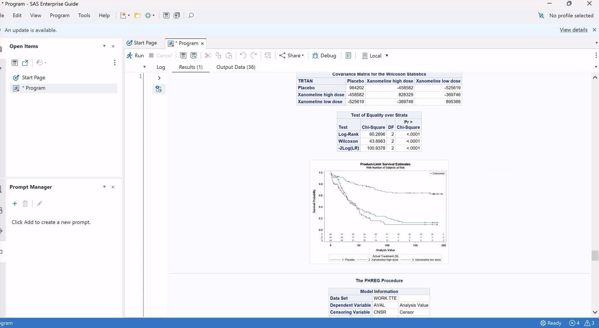
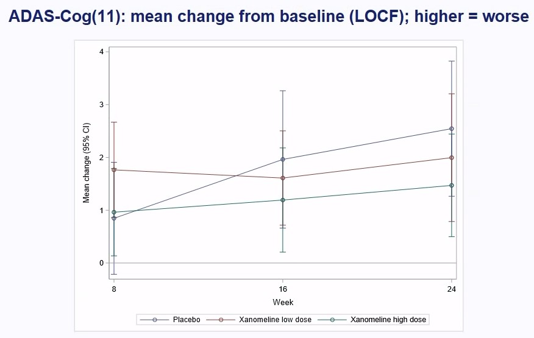
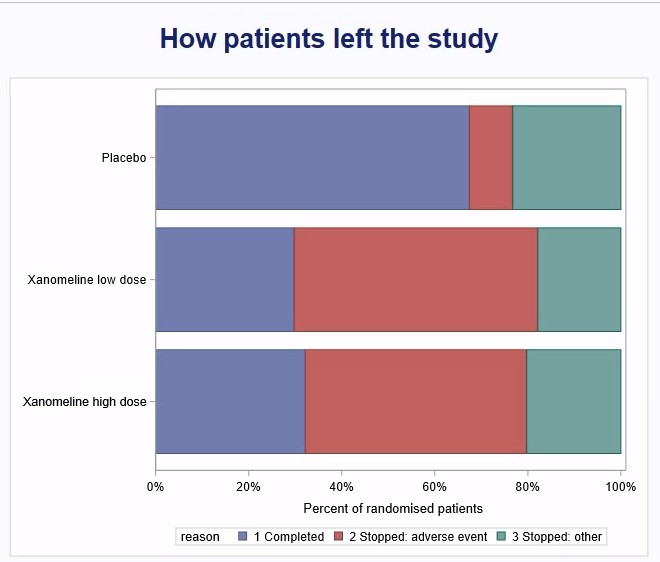
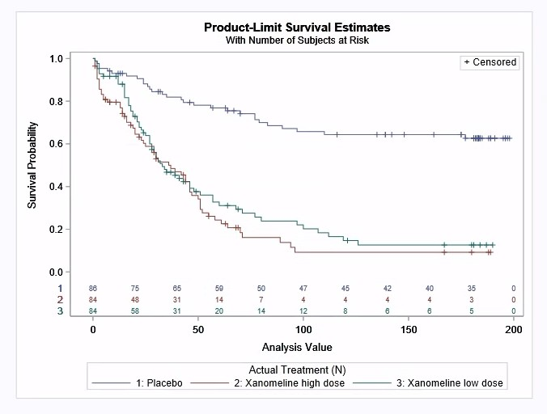

SAS · Clinical trial analysis · 2026-10
The Alzheimer's Patch Patients Couldn't Keep On
A real Alzheimer's drug trial (the CDISC pilot, 254 patients) re-analysed in SAS from its ADaM datasets, the way an FDA submission's tables are made. Every number is recomputed in Python and matched against the R Consortium's published submission pilot.

This is CDISC's anonymised, modified version of the trial, the industry's standard example dataset, not the original clinical database. LOCF carries a lot of weight when half of the treated patients left early. The charts are screenshots of the SAS output.
01 — The problem
A drug has to do two things: work, and be something patients can stay on. This trial tested a xanomeline skin patch for mild-to-moderate Alzheimer's disease against placebo, at two doses, for 24 weeks.
Did memory and thinking decline less on the patch? How many patients finished? And what made the others stop?
02 — What I built
One SAS program, run in SAS Enterprise Guide (SAS 9.4M9) on USF's virtual desktop, over the five public ADaM datasets of study CDISCPILOT01. ADaM is the CDISC standard for analysis data in drug submissions.
- Demographics and disposition: PROC MEANS, PROC FREQ, and Fisher's exact test.
- Primary endpoint: ADAS-Cog(11) change at week 24 (last observation carried forward), with a PROC GLM ANCOVA, a dose-response test, and LS means.
- Safety: time to the first skin reaction (PROC LIFETEST, PROC PHREG), adverse events (PROC SQL), and a glucose ANCOVA.
- The log is the evidence: 0 errors, 0 warnings, and 233
CSV|result lines.check.pyrecomputes all 399 numbers in Python and compares them with the R Consortium's FDA submission pilot for the same study.
03 — How it was built
- 01
Read the ADaM datasets straight from the source
PhUSE publishes the pilot's ADaM data as SAS transport files. The program downloads each one with
PROC HTTPfrom a pinned commit, and reads it through anXPORTlibrary. The first run failed: SAS filerefs and librefs can be at most 8 characters, andf_adqsadashas 10. The fix reuses one short name per file.%macro get(ds); /* filerefs and librefs are 8 characters at most */ filename f temp; proc http url="&src/&ds..xpt" out=f; run; libname x xport "%sysfunc(pathname(f))"; data &ds; set x.&ds; run; libname x clear; filename f clear; %mend; %get(adsl) %get(adqsadas) %get(adtte) %get(adae) %get(adlbc) - 02
Who was in it, and who finished
Demographics come from the intent-to-treat population: age, height, weight, BMI, MMSE, age groups and race. Disposition is why each patient left the study. Fisher's exact test then asks whether stopping because of an adverse event depended on the arm.
- 03
Did it work: the primary endpoint
ADAS-Cog(11) is a cognitive test score; higher means worse. The analysis is its change from baseline to week 24, with the last observation carried forward for patients who left early. The ANCOVA adjusts for site group and the baseline score. It runs twice: once with dose as a number (0, 54, 81 mg) for the dose-response test, and once with treatment as a factor for LS means and the three pairwise comparisons.
proc glm data=adas; class trtpn sitegr1; model chg = trtpn sitegr1 base / clparm; lsmeans trtpn / stderr cl; estimate 'High - Placebo' trtpn -1 0 1; run; quit; - 04
Was it safe: skin reactions over time
A skin patch can irritate the skin, so the key safety question is how soon a dermatologic event happens.
PROC LIFETESTdraws Kaplan-Meier curves with the numbers at risk every 20 days and runs a log-rank test.PROC PHREGgives hazard ratios against placebo. Patients without an event are censored at their last day on study.proc lifetest data=tte plots=survival(atrisk=0 to 200 by 20); time aval * cnsr(1); strata trtan; run; proc phreg data=tte; class trtan(ref='0'); model aval * cnsr(1) = trtan / risklimits; run; - 05
Results out through the log
On USF's virtual desktop SAS can't write to the local computer, so every result goes to the log as a
CSV|line. The log is copied out,parse_log.pyturns it into tables, and their column names are read from the SAS program itself so the two can't drift apart. Turningods graphics oncleared the last warning. - 06
Check against Python and against the published tables
check.pyreads the same ADaM files and recomputes all 399 SAS numbers with pandas, statsmodels and scipy: descriptive statistics, ANCOVA estimates and LS means, Kaplan-Meier medians, log-rank, Cox hazard ratios, Fisher's table probability and every adverse-event count. It then checks every figure the R Consortium's FDA submission pilot published for this study:- the demographics table;
- the primary endpoint table (all three p-values and differences);
- all 33 numbers at risk on the KM plot;
- the glucose estimate and p-value.
All of them match. The glucose confidence interval and RMSE differ in the second decimal. Recomputing shows why: the reference used a normal quantile, and divided by n.
04 — Results
It didn't work. All three arms declined on ADAS-Cog over 24 weeks. The patch's smaller decline was within chance:
| vs placebo | Difference | p |
|---|---|---|
| Low dose | −0.5 (−2.1 to 1.1) | 0.569 |
| High dose | −1.0 (−2.7 to 0.7) | 0.233 |
| Dose response | 0.245 |

Patients couldn't stay on it. Two-thirds of placebo patients finished the study, against fewer than a third on either dose. About half the patients on the patch stopped because of side effects:
| Placebo | Low | High | |
|---|---|---|---|
| Finished | 67% | 30% | 32% |
| Stopped: side effect | 9% | 52% | 48% |
| Skin event | 34% | 74% | 73% |

The skin reactions came fast. Half the patients on the patch had a dermatologic event by day 33 (low dose) or day 36 (high dose); the placebo curve never falls below 62%. Compared with placebo, the hazard ratios are 4.1 (2.6–6.5) and 5.0 (3.2–7.9). The log-rank test gives p = 8 × 10⁻¹⁴. The most common events were itching and redness where the patch was applied.

05 — What I'd do next
- Re-run the primary endpoint with a mixed model for repeated measures (MMRM) instead of LOCF. With this many dropouts, that's the analysis a reviewer would ask for.
- Build the standard adverse-event summary table (Table 14-5.01) in SAS and match it line by line.
- Add a tipping-point sensitivity analysis: how bad would the dropouts' outcomes have to be to change the conclusion?